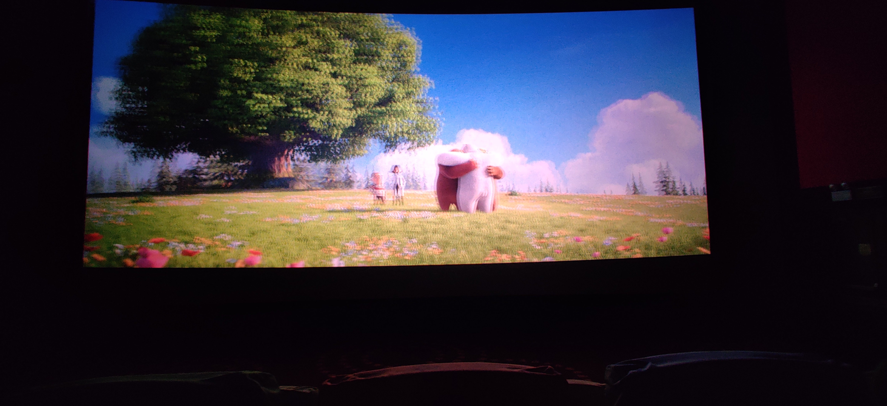

点击查看更新记录
更新记录
2022-06-23 灵感思路
从主题的归档获取灵感，构思文章更新记录的实现
碎碎念2024-01
2024-02-9
龙年期许
龙年本命逢，守护着我命运。
迎挑战与机遇，心怀自信新一页。
祝福与勇气同行，荣耀辉煌共赢。
展望未来万里程，开拓理想新天地。
勇往直前追梦脚，不畏艰辛亦无惧。
希望在新的一年中以勇敢和自信的姿态面对挑战，坚定追逐梦想！
碎碎念2024-01
2024-01-31
拒绝加班，从今天做起！
太气人了，通宵加班，结果老板说我们不能这样。怕我们猝死。
然后 26 小时的加班算调休算 1.5 天？？？？
加个锤子
碎碎念2023-12
2023-12-3
最近迷上了天涯神贴，真的讲的很有感触
报了一个舞蹈班。喜喜
希望自己可以变得乐观，积极
碎碎念2023-10
2023-10-18
究竟要为什么上班呢？
还是要找到自己的核心价值，想一下如何搭建自己的收入来源吧。
2023-10-6
不错不错！
新工作上了四天，发了 1800。可比郑州强不少。小公司别倒闭🙏哈哈
但是哇，钱给的多了，都不好意思不加班啦😭
不过这国庆 8 天，还是舒舒服服的躺了😁
租了个房子
2500 / 月
大概 10㎡吧，一个人住还可以。离公司嘎嘎近。走路 20 分钟那种
嗯，来了一个月了也。
说一下感受吧：
吃：这块外卖还可以啦。正常 30 以内一顿。再用上好评返现 10+。综合一下就 20 以内一顿饭。香死啦！😋
住：呜呜呜😭真的贵。2500 在郑州都是可以整租的存在了，在上海却只能 5 人合租。不过我这个有独立卫浴。可以接受了。
行：路上的车都特有礼貌，是怕给我在魔都买房吗？每次都停下来让，体验很好。但地铁辣么多层，找不着不到。额找出口都得上去 3 层哈哈。外滩人真的多，建议中午去，别人干饭我去卷👍
总之呢：开销 5000 / 月哎不对啊？我是来挣钱的啊？我钱呢？
碎碎念2023-8
2023-8-7
最近时间过的好快啊！
分享一些感悟，最近不是要交接工作吗
我就开始整理总结说明自己的 demo
然后就发现哇，经过一番总结
还可以做出优化。那么今后的代码质量是不是就更高了呢？
所以，大家一定要定期梳理自己的知识哦！
最近很烦。被催婚了。
不对不对，是催相亲了！！！
碎碎念2023-7
2023-7-30
受伤了！😠果然加薪都是骗人的。
我要跳槽！！！
上海直接 double。拒绝画饼！
最近收到了上海的 offer。
不多，12K，本人也是菜鸟，普普通通被压榨的小角色。
碎碎念2023-4
2023-5-18
领导画了饼，够我吃一顿的了。
说给我涨工资，怎么怎么滴，是怕我临时跑路吗？
目前再写一个 GD32F303 的程序
项目地址：https://gitee.com/unique-chai/controller
反正也没人看，哈哈哈，就自己记录一下啦！
碎碎念2023-4
2023-4-1
哈哈哈，公司给咱配电脑了，
虽然是暂时给我用，
但，我可以自己挑
嘿嘿，开心😊
另外我发现我的电脑文件好乱啊
强迫症的我打算好好整理一下了
碎碎念2023-3
2023-3-19
樱花 + 雪哈哈哈真是奇景
苦逼的我，开始带妹了🎃

看一下《熊出没伴我熊芯》，讲的熊大熊二找妈妈，哈哈哈，最后还是没找着亲妈，熊妈妈是苏博士研发的机器熊，熊大熊二的身世还是个迷。还好，还是有些感动的画面的。是我看的太认真了也许。就酱
2023-3-16
别人没有那么关注你，你想做什么就做什么！
大部分人对你观感不好，你也不会损失什么！
上班只是为了赚钱 活着不是为了上班！
你是人生的主角，别人都是 npc！
哈哈，天天都是厚黑学
2023-3-9
今天看了几个句子，又是颇有感触
- 心软和不好意思，只会杀死自己。理性的薄情和无情，才是生存利器。
所以没什么不好意思的，自己才是自己人生的主角。
- 打断你的腿，再给你一副拐杖，然后告诉你，没有我，你连路都走不了，所以你要懂得感恩。—— 鲁迅《华盖集・杂感》
没人会无缘无故的施舍你，只有自己学到东西了才能、才有被别人重视的机会。
- 如果一个人影响到你的情绪，你的焦点应该放到控制自己情绪上，而不是影响你的那个人上。
自己一个人、也挺好
哈哈哈哈，又网易云了
2023-3-4
有一段时间没更了，
自从上了班，
基本上也没什么时间了，
这就是成年人的世界吗？
枯燥，乏味，没有尽头
出了两次差，去了河北保定和山西长治
真的累
不过还是有点收获的
至少已经知道程序要理清楚框架了
一定要持续更新简历
千万别安于现状
碎碎念2022-11
2022-11-13
爱情是一场战争，
什么脸面的，什么尊严，都不重要！
如果现在不把握，几年后你们真的是一点关系都没有的陌生人！
so
为啥还不敢，为啥还怕这怕那
冲啊！大胆一点。
我的亲身经历，当你们人生的交集结束的时候。大概率你们会成为陌生人！❤
碎碎念2022-10
2022-10-24
今天我家小区超市的菜又被抢空了，为什么呢？？
我一直很费解，而且还涨价，还抢空。。。
很无语，
仔细思考来，大概是羊群效应吧
就是不思考，人云亦云，跟风
可能大多数的人都是这样的。
当然我们可以利用这一点。这让我想起了股市。也这样吗？大家认真思考一下吧
2022-10-3
为什么后浪推前浪？为什么年轻人有时候比年长者机灵。
我在想，如果未来某一天，我也成为别人口中的年长之人，该当如何。
可能是工作结婚之后，杂七杂八的生活充斥了整个人生，而年轻人有着大量的时间精力。成年人就只专注于家庭工作。
那，我老的时候呢，如何才能继续精明。那样可能很累吧！
2022-10-3
为什么吸烟有害健康，照样卖烟。
为什么玩游戏毁青春，依旧盛行。
其实，国家是需要廉价劳动力的，我仔细想了这个问题，假如说都清高了，谁来扫地，谁来盖房子，谁去搬砖？
这生意简直就是三赢啊
【1、烟和游戏，创造的就业岗位】
【2、烟和游戏，产生的消费，促进经济】
【3、未来这些人，没有过人的技能，补充了底层劳动力】
想来着实可怕！一些个人的想法，还请指教。
碎碎念2022-9
2022-9-26
工作时，主动给领导一个方案，问能不能干，可能领导也没想到呢。
要敢于展示自己能干啥，主动问别人要资源，让别人利用你，把你的长板补长，老板不会让你在公司补你的短板，而是利用你的长板。
初创公司怎么扩大影响力呢？招聘吧！！！将来我要是自由职业了，就弄个营业执照，开始招聘。其实我觉得，招聘是可以盘活经济的。哈哈哈，不管找不找得来，你是跑了吧，来回路费，渴了水钱，饿了吃饭，所以，我觉得一个地方，越招聘，越盘活。
老了，开个开放式的影咖，免费放电影，卖小吃。放动画片，吸引小孩！！！小孩和女人的钱最好挣。
象棋的核心，在于牵制。
生活处处都是拍卖会！所以要学会吹牛，扮猪吃老虎？？？抱歉，你是猪的时候，机会不是给你的，你是待宰的！！！
怎么热情！喜欢每一个人！这样才能桃花运不断！！！
有个想法！把 5 个自己合成到一个视频中，对话！！！或者找男生唱歌，我对口型！
2022-9-23
讲真的，手机卡这个玩意气死我了。
看葫芦侠三楼说大王卡可以申请 70G 流量。然后发出了活动的详细介绍，以及教程【教程有点残忍哈哈！就说不给加就投诉！！！重点】
之后我就跟客服联系了，他说跟我申请！结果拖延时间呢。【当时我没有投诉！投诉的小伙伴都加上了 8 元月租都加上了，我 38 / 月】
活动结束了跟我说不行，加不上【其实还没结束！都是话术】然后我就气的不行，人家新用户都可以，我 7 年的卡，忠实用户啥活动也没有，就这遇到一次还不给我加，就为了新用户抢占市场？？？老用户体验极差！！！
我投诉完，立刻就有客服跟我联系了，真的态度都好了。可是呢可能活动真的结束了。这都拖了 4 天了。
【感悟】我明白一个道理，得不到的永远在骚动，得的到的都有恃无恐！所以我来了个保号套餐，来吧，永远做两边倒的新用户，他们就会抢着要你！！！就像台湾，无视中国警告，两边交好。自立为王！这也许就是台湾的生存之道吧！
【同理】人生也是如此，该站队时站队，但切记，不要绑在一只船上太久！！！
2022-9-21
打仗的时候呢，就算前线崩了。回来也要报大捷，自家士兵的士气不能弱。
公司也是吧。
2022-9-20
人这一辈子啊，真的不容易
目前来看，各种套路应接不暇。
从幼儿园，资本家创造一些好玩的，好吃的吸引小孩消费【俗话说女人和小孩的钱最好挣】
上小学开始，补习班盛行，又是一笔支出
高中更甚
大学，自以为的自由，可笑可笑
陷入无尽的深渊，开学第一天：什么宿舍必需品骗局就来了。【非常有印象的是，床垫，我高中睡木板床，大学了看人手一张？？？200 块一张，成本 40 左右，暴力吧。结果我买回来铺了 1 周就扔了】
大二，各种培训班开始了，但是我哪会还只知道玩，哈哈
大三，玩玩玩，作为大学里最资深的一群人，当然是玩啦
大四，呵呵，强制实习【其实根本不强制，吓唬你的】这样又是利益工具，勉强混过来
毕业 ====>>> 失业，就业培训机构接踵而来。
不觉得吗？
人生就是一场骗局，
鼓励生育？？？？难道不是为了增加需求吗？
害，何时我才能找到自己的生存之道呢？😂
2022-9-18
嘿嘿嘿，我这个人就是这样，思绪过多。
今天剪头发的路上想，可能一场轰轰烈烈的骗局，需要 4 各阶段，
【1】资本家死锁消息，闷声发大财！
【2】消息已经散出去了，加上行业竞争开始，于是分销商出场。资本家再赚一笔。
【3】市场已经饱和，已经人尽皆知，资本家发现这样不行，随时可能崩盘，那么他会怎么做呢？答案是：边砸利好消息，边随时准备退出。这个时候呢，他们可能已经赚够了，只是为了资本的安全出逃。
【4】一地鸡毛！
所以呢？就算是信息大爆炸的时代！依然是套路满满。
2022-9-17
洗碗的时候，突然想起了李易峰 PC 被抓的事，
进而产生了一些想法，大致说一下
首先呢，我们要明白，咱们看到的都是这些媒体公司让咱们看到的。
那么问题来了，
为什么我们会在事发这么久之后才看到，
我想，这里面可能有一层利益关系：【个人的胡思乱想】
首先，是事发了，李团队第一反应是辟谣，
接下来，实锤了，李团队也是两种选择 1、压下去 2、流量圈钱【管他黑的白的流量就是钱！】
那么 W 博是怎么样的呢？1、屏蔽、降权【它让你搜不到，你就搜不到】2、上热搜【虽说禁止买热搜、但我不信，况且你能搜到才会搜，如果官方直接让你搜不到，那还谈什么热搜，在别人的平台、始终都是要受制于人的。看人家川普，被封号直接自己买了个社交软件，包括马斯克买了 twitter】
所以问题来了。有差异就会有利益！
如果李团队要压热搜、那么媒体就可以去找李团队谈了，谈什么？谈价钱啊！【天下往来，无利不往】反之亦然。
所以这究竟是不是如我猜测这样就不得而知了。臣妾也不是圈内人。
不过无非是想要看清这件事情罢了。
这也就，可以解释为什么案发最初，新闻不出，一方面警方在调查，另一方面李团队也在和媒体谈吧。
说了这么多，其实是想说明白一个道理。
那就是【当你是刷出来的什么新闻或者赚钱的什么风口，记住别傻乎乎的一股脑冲进去，多半是资本家的陷阱。我们应该多去发掘那些被埋藏起来的，因为那些，正是资本家不想让我们知道的，也有可能确实是垃圾文章，所以还是要有自己的辨别能力的】
呼。。。就说这么多吧！一些个人的奇思妙想。哈哈哈，我就是喜欢瞎胡想。
2022-9-11
任何有销量什么的东西，都有内幕，内部渠道去打开销量。（淘宝客，外卖，还有等等等等）直接加入，自己买大件，自己都可以便宜。
请教问题和教别人东西，最好简单一点。容易是人们的所热爱的懒惰。
并不是你免费我就来（当然也有）但时间也很宝贵。更多的是，有效果，办事多要钱少我就来。
面试不能说我喜欢啥？有个屁用！要换成我能干啥。大胆点吹就完了。
如果你想召集一些某行业的精英，就办比赛，开论坛大会... 这些只是幌子，结识大佬，召集人马才是真。
从大大小小的比赛中获得的一些感触。
为什么有些人的链接总是有时效性。增加用户粘性。类似于车需要保养，灯泡的寿命。如果周期太长，那盈利就很艰难。所以厂商就人为降低他们的使用寿命，为了挣钱。
2022-9-7
这个世界真残酷，一遍又一遍的提醒我是垃圾。
大概是我想要的太多，实力还不行😂
看淡了，如今挫败感已经打不败我了。
毕竟，我已经身经百战。虽然还未有过闪光点！但是，这点挫败感，狗屁不是。
突然发现，我们一直在为信息差付费。
淘宝上鱼龙混杂，一样的东西不一样的价格。
所以我就诞生了一个想法，做一个比货平台。
需要记录：商品，参数，使用体验，渠道，价格等等。
让它们的价格透明化，这样买东西时可以直接先通过平台知道行业最低价，方便减少被消费的行为。
不过如果是盈利模式，难免最终会回归乱市。
碎碎念2022-8
2022-8-29
小孩子真的没有烦恼吗？我看未必，可能每个阶段都有每个阶段的烦恼吧！
所以小孩想要长大，大人回忆童年。可这都是逃避吧。
看了 B 站的一些面经啊，工作经历什么的。才恍然大悟，证书真的很重要哎。
而且各行各业都有证书，在这里告诫自己，工作之后莫要安逸，证书考起来🚀。
终身不要忘记学习，生活会回报你的。
2022-8-28
1. 餐厅打小票，随机号码，985，211，520 这些有意义的号码叫号，然后送祝福送礼品。
2. 为什么不能只制单独作一款大屏幕然后和手机连接，类似于电脑屏幕的功能。事实上淘宝上已经有了。我想的是那种类似于云服务器一样，一家人只需要一个高性能的服务器，然后手机和电脑不需要 CPU，只需要当一块屏幕，计算跑在家中的服务器中，这样弹性的性能，你家人不可能用手机高峰期一直在一个时间段吧，所以我觉得可能这样能够效益最大化。
3. 无纸化学习必然流行（要不是我没钱哈哈哈）
2022-8-25
求职的时候吹，使劲吹，
你不吹机会都轮不到你，
期望薪资往高了要，
突然想明白，如果你的期望薪资要的低，一方面 HR 觉得你白菜价，第二你自己底气不足。所以高 20% 要，大胆一点。别怂。
我有点阴谋论
哈哈哈，可能是自己的原因
突然大脑里就蹦出点想法，
规则的制定者（国家）有没有一种可能，他知道这个市场有漏洞，但是最开始，他不管，他先自己用漏洞赚的盆满钵满，等到知道的人多了，在补全规则，之后再抓人，罚款
哈哈哈，是我太阴暗了吗？
2022-8-23
当聪明人做出连普通人都觉得愚蠢的事，那一定就是在赚钱。
我觉得的未来一定时无纸化的，电子书盛行。
家庭中也都换成了集中式服务器，分区 -> 去分家庭成员，动态分配电子设备性能。
小孩的智能设备供不应求。
老人的智能赡养设备也将横空出世。
一点自己的想法。
2022-8-10
提问的艺术：想要与别人建立联系，就是要向别人索取帮助，你没听错，不是帮助别人，而是索取，请帮忙啊，问问题啊。
当然了这些一定要对方力所能及的（你问她，她也不会，那你还玩个毛）
问问题自己会的也可以装傻问😂有点厚黑学，不过事实却是如此
这样才能产生联系，促进关系。
她帮你解决问题了，这时为了表示感谢，你在请客，帮她忙，这不是理所应当吗
学会了吗
碎碎念2022-7
我发现我有个问题
我总是喜欢用通俗易懂的话去解释那些繁琐的问题
可当我跟别人说时
他们又会认为我的话一点也不专业、并没有 get 到我只是想理解而已
so 我觉得我应该改变一下、
今后还是自己理解自己的、跟别人说一定要背书、就让他晦涩难懂、就让他一头雾水
如果你给别人讲清楚了、那么你就没有了价值、
额、就这样、一点浅薄的看法
2022-8-2
一定要学会吹牛，
现实就是这样
你自信 + 吹 = 机会
你自卑 + 低调 = 落选
so
在你成名之前、大胆一点
往死里吹把
机会到手了
干成了 - 功成名就
没干成 - 能力 +、人脉 +、阅历 +、然后下一家！
所以、干吧！吹吧！别他妈怕！人生如戏、全靠演技！
经济的发展在于连接、运输
以前是水运、所以沿海地区发达
之后是铁路、都是连接地球村的
现在想来、互联网不也是吗（微信）
连接手机、电脑、智能设备的
元宇宙不也是连接人与人的一种高级玩法吗
所以、只需要思考还有什么产业是需要连接的、就应该可以掌握命脉
2022-7-31
今天我爸妈带我妹妹去参加舞蹈比赛了，故而家里久违的清净，我便出门讨口饭吃，路上想到
做人不能急，干什么都不能急
炒股你越急于赚钱，就越会被利用，然后血本无归
购物，你越急于去表现出想要的欲望，那你砍价就砍不下去
人生是场马拉松，
只有持之以恒才能成为个中翘楚
原来大学就是实现梦想的地方、
我却给他当成了玩乐之地
突然很有感触
不努力的根源来自于眼界
并没有见过大世面、并不知道原来世界这么大
所以也没有什么追求
所以我觉得、如果我有了孩子
他上了大学、第一件事、
就应当问他：“你喜欢这个专业吗？”
“你想从事什么工作？”
大学就是给工作做铺垫的、四年的宝贵光阴。
是人生中最幸福的时候
没有经济、生活、家庭的压力
最适合搞自己的兴趣、搞自己的事业
这样才能在毕业季不犯愁
你必然是要面对社会的、必然是要工作的 (总之是要有一个收入来源、无论什么办法)
有收入才是你立足的根本
这些并没有人告诉我们、所以这才是大学的目的
事实上
大学、企业、政府
三方是有一定的利益关系的
大学 - 输送人才（拿政府教育补贴、和企业合作提成你的工资）
企业 - 需要劳动力（拿政府补贴、利用你的廉价劳动力）
政府 - 创造就业、发放补贴（中国是中央制所以政府是老大、只管跟住就完了）
大学和企业是有深度的利益交换的、定期给企业输送廉价劳动力
咱们从小都被陷入社会的陷阱之中了
大学的好坏其实也没那么重要（还是很重要的、只是说就算你的大学不好了、你也是人、你也是 4 年）
重要的是你如何利用这四年
练就一身立身之本
才是大学的目的、有句话很好、大学从不教你怎么挣钱
但毕业你就要面对这一切
那为什么不早点开始着手准备呢
如果你要上更高的层次
我觉得也是要大一就开始着手准备了
总之、陌生人加油！一点胡思乱想、希望对你有所帮助。
同时也是记录一下自己的思想历程
多年之后回看一下或许会有更深的感悟和收获。
柴大大
2022-7-30
好迷茫、到底该选什么
我
有的选吗？
2022-7-28
红色当你来到人生的岔路口时
你的能力还不足以去自己选择
痛苦随之而来
可
生活还是要继续
不就是这样吗
总是在痛苦中成长
小说动漫电影无一不是
唯有直面痛苦
涅槃重生
方能选择自己想要的一切
2022-7-20 女友来例假标准问候话术
这几天你不要碰冷水，回家了半躺着，把手搓热在小腹上顺时针揉揉，想它流出来就平躺着，不想就曲着腿，去买点酒精和棉球，痛的时候，塞一个酒精棉到耳朵里，在备一点红枣枸杞红糖，疼得时候泡水喝，晚上睡觉用小的软的物体垫一下小腹后背，会好很多。别吃油炸食品，最好每天保证睡足 8 小时，避免吃生冷、寒凉以及威辣的食物，多喝一些温热并且促进血液循环的茶水，如红糖水、姜茶等，可以喝一些具有补血功能的食物，如红枣、莲子、川贝等，可将它们熬成溢补粥，睡前饮用，不但能促进血液循环，减轻经期不适，还能补气养血衣服要穿厚点，生理期比较情绪化，想干嘛就跟我说容易生气，不开心要告诉我。红糖姜茶别忘记喝
2022-7-15 去老丈人家怎么唠
给你一个建议。带礼品是肯定的，去了，自我介绍之后，看见做饭，第一时间和女朋友去厨房（重点是把女朋友领进厨房），她家肯定不会让你做饭，你就陪老爷子聊天。不要干聊，递烟（怎么递烟自己学网上找，有学问），一问身体，二问收成，三问政策（务农有补贴政策，自己找找，）四问，女朋友的小时候，多夸，五问，最近生活（疫情影响），六问，叔叔爱好（下午出去回来备好），七问，女朋友相关，然后就不要岔开这个话题了，说说女朋友最近怎么样啊，去哪儿玩了的啊。保证一天下来，就是自己人了。我已经在女朋友家住两年了
2022-7-10 表白攻略
我敢说我这是全网第二牛逼的表白攻略，
没有第一，所以不接受反驳。
谈恋爱切记不能表白，
我看你这又是一个投降派，
表白在恋爱中等于仗还没开始打你就举了白旗。
你好好看我接下来的回答，你自然就懂得为什么不能表白。
1. 恋爱新手最喜欢表白。
实际上你看到别人已经表白成功的那种例子，
是别人已经看上你了，
这个是最重要的一个环节。
上面这一点画线，重点画线。
我们男人做事情应该是 “偷偷” 做，
这里指的 “偷偷” 做的就是：
明修栈道，暗渡陈仓。
这个才是去谈恋爱。
你知道一个女生微信上每天有多少个男生再跟她表白么？
反正你两只手数不过来。
我理解你的这种表白思路，
你直接跑去表白也没有错，
你就是想让这个女生相信你，证明你很真心，
再然后给你生个猴子。
有这种想法真的让人笑死，
你说我喜欢你，鬼相信你，
重点不是你喜不喜欢她，而是她喜不喜欢你。
上面这一句再划线。
不去表白，其实就是不要去告诉你跟女生的真实想法。
跟她玩在一块，就像玩游戏一样，
一边玩一边调戏，
玩着玩着她就什么都跟你说了，玩着玩着就在一起了。
当她什么都说的时候啊，你慢慢就可以都画出来一个轮廓，
就可以自己知彼百战百胜喽。
所以女人说男人，就是猴急，
我问你猴急什么？
接下来继续听着，我告诉你表白会带来什么后果。
2. 女生基因自带贞洁机制。
你表白的原因是什么？
你不要跟我说你喜欢她，这在女生听来就是扯淡。
就算是傻的女生也知道你跟她表白的意思是要干嘛。
上面这一句给我标红划重点。
你跟她说，我喜欢你，我们可不可以在一起？
女生心里就会想，你喜欢我，我们就要在一起，那我成什么人了，我能这么随便答应你？
女生是不会随便答应你的，除非她是真的很喜欢你。
你让女人口头上去答应你什么，就会让她有一种没有贞洁的心理。
其实女人也偷心也好色，这个是人类天性，男女都一样。
你看电视剧女人要名分，要的是老婆的名分，不是女朋友的名分。
你看哪个女人因为男人跟她表白哭的，都是因为求婚哭的。
为什么表白不会哭？
因为你在跟她恋爱的时候，还是结婚预科班，她还在判断能不能和你走到最后。
为什么求婚要哭，是因为她觉得你通过考验了，
以后的生活有着落了，有一个男人对她负责了，再也不用苦逼了。
而且就算是有些女生特别喜欢你，是她追的你，到最后在一起的，她还要跟你扯皮是当初你追的她。
女人不管对错都是要把错误和责任推到男生身上的。
你看生活里女人总是叫男人有责任心，为什么不叫女人有责任心。
卧槽，她们这样跟你洗脑，你有责任心了，她们就不需要负责任了，
不需要负责任，自然就没心理压力了。
你把责任推到她们身上，她就会觉得她很不舒服，觉得她很放荡。
她们不仅教我们要有责任心，还教我们要主动，
男人啊，你要主动去约她，去牵手，去亲她。
来，我们进入下一个环节・・・
3. 表白会诱发女生金钟罩机制。
有了贞洁机制就会诱金钟罩机制。
她一旦开启这个机制，那你的成功难度就会增加。
女生他脑子里是有有一个缘分意识。
她们最经常讲的一句就是我们在一起就是缘分，碰到了是靠感觉的这样的。
所以他们是很不喜欢或者说可以说是不接受这种有目的性的恋爱，
那如果表白，就是告诉她你对她有目的性，那么她就不舒服。
所以说你要给她一种感觉，就是缘分。
不动声色这几个字很重要，
你再标红画个线。
这个就像打猎一样，
你永远都是不动声色地靠近猎物
不要表现出你的目的，
不要打草惊蛇。
刚才开头不是跟你讲了，你去表白就像一个投降派。
比如你是一个将军，你要去偷袭敌军，你还告诉敌方你几时几刻要去偷袭他们哪里哪里。
结果呢？
就是她会给你来一个瓮中捉鳖，
所以你想偷袭就偷袭，不要去告诉敌军。
兄弟，你千万不要当这样的笨蛋。
4. 男人要名分是很愚蠢的。
我之前看过一个问题，很好笑。
就是一个女生和我牵手了，但是还不答应做我女朋友。
我心里想，emmm，这个人不是傻逼么，然后三根黑线冒了出来。
男人跟女人要什么名分啊！！！
她都跟你牵手了，还问别人做不做女朋友？
在读书的时候，有人跟你说我是你爸爸，你就怒了，他说他是你爸爸他就是你爸爸？
笨蛋才用嘴巴去说，牛逼都是动手去做。
人是行为塑造思想的产物。
跟女生不需要表白，你只需要去行动，一旦确定她对你有好感，多约几次。
约几次，能出来了，就证明她对你有好感了。
刚开始，过马路的时候，就是个借口，
不经意的挽起她的胳膊，两个人就顺势有了肢体接触。
肢体接触才能升温你们的关系。
她要是挣脱了说你，你就说你在学习扶老奶奶过马路。
再下一个路口，继续这样做。
多来几个回合，她就被你拉着走。
来，继续接着下一个阶段，
能看到这里说明你已经成长了到了恋爱等级 level3
每一个点都是有衔接性的。
5. 男人一定要当强者。
你知道么，有些男生，永远追不到女孩子！
为什么，比如说刚才牵女孩子过马路，他被拒绝了，就不敢来下一次了。
你觉得能泡到妞的人是怎么回事，
能泡到妞的人就是牛人啊。
他失败了过后就他并不认为是失败，他就是总结经验下一次走的更好。
所以男人不管是在感情方面还是在这个事业方面都要做到这样子。
那么笨蛋是什么？
笨蛋是碰到一个事情，
哦，不行就不去弄了。
你很羡慕别人有女朋友，我告诉你以后有女朋友的会越来越少数。
而且很多人会一直都没有女朋友。
就是因为自己没有自控力和坚持。
恋爱不就跟打游戏一样，你失败了对不对没关系，复活了再来，
失败了没关系，复活了再来，就是这个样子。
只要这个关系不断，你就继续。
女生她很擅长用这一招，
她生气了，她也不说拒绝你，也不拉黑你，她不搭理你，这个就是最高境界。
然后感到高兴了她又搭理你，就是这个思路。
就是让对方心里面七上八下的让对方去猜测你。
恭喜你，又升级了。
6. 强者就是胆子大一点。
为什么我们很多男生为什么追不到女生？
就是因为他牵手只敢玩一次或者最多玩最多玩两次。
什么叫胆大心细年皮厚？
你把这个记下来。
胆大心细脸皮厚还有就是屡教不改。
女生有时候会教训你
教训你也不要改，继续我行我素。
屡败屡战啊失败了，再干失败了再干。
如果你马上就改然后你就会变成一个懦夫，改了过后这个女人就不会喜欢你了，她就讨厌你了，
觉得你这个人没什么了不起的对吧。女生其实就是对你做一个废物测试。
画线画线画线！！！
而且失败是一个合理的现象，失败多了自然成功了。
成功者成功者他是正面思维，简单来说就是失败了也无所谓，
其实就是那么几分钟的事情，失败者是负面思维，他自己把自己吓着了。
其实就是你胆子大一点，放开一点。
不要怕失败。这个女生不同意还有下一个女生，下一个女生不同意还有下一个女生。
总归有一个会同意的不要怕失败。
女人永远是想跟强者，女人永远是想跟强者。
她是天性的弱者，她本来就一直在追随强者。而大部分女人都有这个受虐的心理，几乎是百分之 99% 吧。
你比她强势，然后她就来照顾你，她就进入了小女人这个状态了。
2022-7-10 小想法
餐厅打小票，随机号码，985，211，520 这些有意义的号码，然后送祝福送礼品
卖西瓜的故意只拉半车，说是一整车就卖剩这么点了。
智能降噪窗户
2022-7-1 工作经验（望自己多多感悟）
1、公司的资源，永远都是有限的。会哭的孩子有奶吃，要敢于向公司索取资源，要学会争取领导和同事的支持，别只想做老好人，要想着做成事。
2、不断把小事干好，老板就会交给你更重要的事。抱歉，真实的职场并不总是这样。每个公司都有一堆小事、琐事，这些总得有人干，如果你长期满足于做这些，你可能就会一直做这些。主动地、不断地去为自己争取更重要的事情做。先完成，再完美！
3、没有稳定的工作，只有稳定的能力增长。创业公司、大企业、国企、央企、外企、事业单位、政府部门，都不稳定。
4、学会服从和执行。很多时候，不是领导想不到你能想到的点子，而是很多时候点子真的没那么值钱，你要明白「想做」、「能做」、「可以做」这三者的不同。
5、有功，就要学会邀功。辛辛苦苦工作了一年，结果年终汇报你草草了事，其实是在坑自己。不要以为你做的，老板都看在眼里，老板可没那么闲，尤其是在大公司。
6、面子不值钱，尤其是你的面子，尤其是你能力不够的时候。
7、没有企图心的人，不会有很大的上升空间。但切忌把企图心写在脸上、挂在嘴上。
8、在公司里，再自私自利的目的，你也要学会用高大上的套话包装一下，别管大家信不信，别把愚蠢当真诚。
9、做得好，不一定被提拔。要学会主动展示自己，先要让自己被看见，然后才能被认可，不能坐等机会，要主动争取机会。
10、不管你在哪家公司，最好要知道，谁决定你的去留，谁决定你的薪水，谁给你做绩效考核。
11、工作是领导分配的，但能力是长在自己身上的。不要以完成任务的标准工作，而是以长本事和涨知识的心态工作，这样你会发现，你是在领着工资学习，不仅成长更快，而且更开心。
12、工资本质上是自己给自己定的。放在整个市场上看，放在稍微长一点的周期里看，别纠结几个月的不公，别纠结一家公司的判断。少关注工资，多关注成长，工资自然越赚越多。
13、哪怕你离职是因为和同事吵翻了，写辞职信时也要说是因为搬家了才换工作，人要学会给自己留后路。
14、每个人都想做自己喜欢又擅长的工作。但如果你暂时没找到喜欢的，可以尝试先逼自己把手头的工作做到擅长，因为大部分人都会喜欢做自己擅长的事。
15、与同事沟通，重要议题做决定后，最好用文字呈现后再次同步给其它成员。一方面是备份，更重要的是强化各方达成的共识。
16、别越级汇报和越级指令，尤其在大公司。若做了，及时让中间层级的人知情。
17、性格外向爱说话和擅长沟通，不是一回事。简单的事，学会在 30 秒内说清楚；复杂的事，沟通前演练一遍，哪怕是在心里演练；不能完全自信，就先在手机便签上写一写，列一下 1 2 3。
18、主动汇报工作进度。主动汇报进度 > 完成后及时汇报 > 结果不好 > 不汇报。每次别人不问你不说，做得再好也会减分。
19、团队协作时，乐于被领导也是一种能力。在一个协作流程中，学会主动伸手和上下游对接；给别人出选择题，而不是问答题，尤其面对上级时。
20、保持练习写作能力。能想明白、写清楚的人越来越少，眼高手低的人越来越多。不管你在哪个领域、做什么工作，会写东西永远都是一个加分项，写作本身也是一个思维训练的过程。
21、做过领导，你才知道当领导有多难。做员工时，你觉得领导是孙子。做领导后你会发现，爷爷更多了，上面有爷爷，下面也有爷爷，越是中层，越难做。
22、管理好自己的情绪，别发火，别生气，别撕逼，别抱怨。家庭的压力、生活的压力，不要发泄在职场中。职场中产生负面情绪，也别带回家，别释放给家人。
23、团队共事过程中，尽量少做负面表达。怀疑、质疑、暗讽、指责、抱怨、牢骚，都是给你无限减分的负面表达。只会提反对意见的人，真的招人烦。提反对意见时，你最好有更好的建议，提问题最好也备着解决方案。
24、没有人真的不可替代，别把自己想得太重要。不要觉得自己重要到老板离不开你，很多人都有这样的幻觉。BAT 的高管每年换多少，那些人个个都是人精，但少了谁太阳也照常升起。
25、职场早期，作为下属，一定别太计较干多干少。干的越多，学的越多，在公司的口碑越好。领导说不说，都是看在眼里的，没人会喜欢太过计较的人。
26、别以为自己还年轻，就不着急努力。毕业 3 年后，你还没建立起核心竞争力，可能以后想努力都没机会，那些精力比你更旺盛、薪水要求却远没你高的应届生会把你碾压。
27、没有人不迷茫。你迷茫、焦虑，别怕，大家都这样，年薪百万的人更迷茫。迷茫就多问，多搜索答案，多告诉自己这是正常的，然后及时调整。
28、别给自己设限。经常有人在后台问我，「我已经做 XXX 3 年了，现在转行去做 XXX 还来得及么？」，一问对方，才 26 岁。为什么 30 岁还没到，就觉得人生定型了？明明人生才刚开始，别什么都不敢尝试。
29、最怕的不是死工资，而是心死了。很多人大学毕业时，一腔热血充满激情，相信自己相信未来。但进入社会两三年后，亲身体会了现实和理想的差距，就慢慢的认命了，这才是最可怕的。你 25 岁，还很年轻，你 30 岁，还很年轻，你 35 岁，也还年轻，不要在年纪轻轻的时候认命，这是最重要的。只要不认命，就还有机会。
30、职场早期，你更应该相信长板理论。尽可能放大你的优势，比拼命去补你的劣势更重要。积累自己的不可替代性，而不是成为一个什么都会的平庸者。
31、永远别嘲笑努力，持续努力本身就是一种能力，80% 的人都没有这种能力。
32、自己风光时，别笑话别人。这个世界的变化速度，超过大多数人的反应速度，你风光无限的行业随时可能被颠覆，你积累的经验可能随时变得一文不值。
33、也别老觉得领导是傻逼。他能做你的领导，一定有比你强的地方，去学习。
34、自己做领导，尽量别跟下属私下太过亲近。否则下属犯错、出现管理问题时，你里外不是人。你能做到公私分明，对方也未必能做到。
35、不论是 80 后还是 90 后，职场危机并非你人到中年时突然出现的，而是在你毕业两三年时就埋下了种子。毕业后初入职场第一年，新入一个行业，一切都是新的，你充满好奇，充满干劲，充满希望，也满满的成就感，因为那是你从零到六七十分的过程，你每天都觉得自己在快速成长；职场第二年，没有那么多好奇心了，但因为惯性，很多人还能保持学习，然而从 70 分以后的进步你就很难每天感受到了；职场第三年，很多人没了好奇心，没了成就感，进步开始停滞，甚至怀疑自己，从此就是步入平庸的开始，也是职场危机的开始。工作两三年后，要努力保护自己的好奇心，逼自己每天晚上睡觉的时候都要比昨天好一点点，哪怕仅是一点点。
36、工作做完了、做好了，及时交代很重要。工作没做完或者搞砸了，及时交代更重要。工作中犯了错、有失误，立刻主动承认、解释。
别等别拖，哪怕是小错。上学时老师说的「我不想听你解释」，在职场中就是傻。
37、如果有同事突然跟你走得很近，你得保持一定的警惕，冷静分析对方有什么目的。
38、别得罪任何你不了解的人。楼下保安、食堂阿姨、保洁叔叔，任何一个都可能就是你老板的亲戚朋友。
39、职场是个利益场，不要老想靠着谁，人都是自私的，你只能靠自己。良性职场人际关系的前提是，你对别人有价值。
40、别轻易说不会、不懂、不行，牛人都是在干中学、学中干，不断成长和进步的。一开始不会没关系，但总说不会就没人再给你机会了，别老把自己当新人看。
41、你把时间和精力投入在什么地方，你就会收获什么。下班后过度消遣，你收获的就是空虚、焦虑、堕落；利用非工作时间学习，你收获的则是持续的进步、成功和喜悦。
42、如果你想成为一个领导者，就不要等到真的升职后，才开始当领导。不要管你现在的职位，要经常把握时机展示自己的领导力，否则你可能永远当不了领导。
43、老板或领导的决策总是会变来变去，不是因为他们 SB，而是这个时代的变化太快，市场变化太快，企业的应变速快必须跟上。而且他们通常能比你更快的接受到更新、更重要的信息，他们有更多的时间进行更深入的思考、得出更优的结论。一个底层的逻辑，老板一定比你更在意结果和成败。
44、学会独立解决问题，敢于独立做决策，别不停的问问问。老板眼中最理想的员工是，你只要告诉他你要什么、要什么效果就可以了。
45、工作经验不是指你一件事情做了多久，而是指，你用了多久的时间，去思考、优化、改善它。很多时候我们的工作都是在靠惯性推动，不再去精进优化每一个环节，如果每天都能更严格一点，一天比一天好一点，你慢慢就能进化成这个岗位的顶尖高手。
46、要定期反思，我最近成长了多少。别只到年底了才发现又荒废了一年，每个周末、月底多问自己「我成长了多少？」，别长期陷入麻木、重复、佛系的状态。